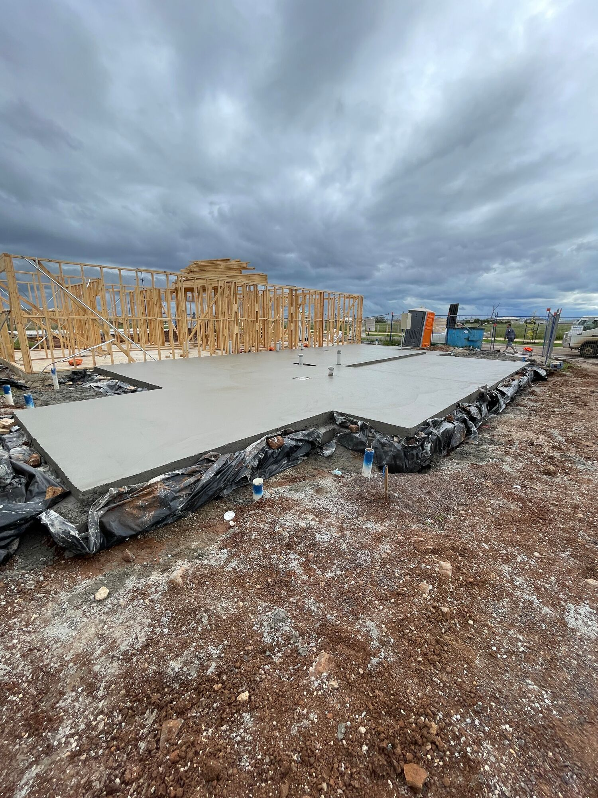
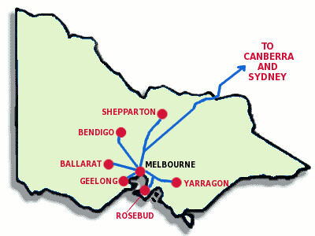

-1500h.jpeg)

Talk to the team.
Reach out directly to Subcon P/L to discuss residential concrete work, slab requirements or your next project across Melbourne and Ballarat.
Start with a call or email.
Use the existing Subcon contact details below to speak with the business directly.
Melbourne & Ballarat.
Subcon's existing company material identifies three core service regions for residential concrete work.

Based in Truganina.
Subcon P/L's listed office is at 38 Petepaul Way, Truganina VIC 3029, supporting residential work across the western and northern Melbourne corridors and the Ballarat region.
See the work.
Know the services.
If you want a clearer picture of Subcon's capabilities before making contact, the service and gallery pages show the existing work and residential slab stages in more detail.
Services
Piers, base preparation, reinforcement, slab pouring, finishing and supporting site operations.
Project Gallery
Existing Subcon project images showing residential concrete work and construction stages.
About Subcon
More than 12 years as a business, led by Ray Spiteri and supported by a team of more than 50.
Call Direct
Speak directly with the business about your residential concrete requirements.